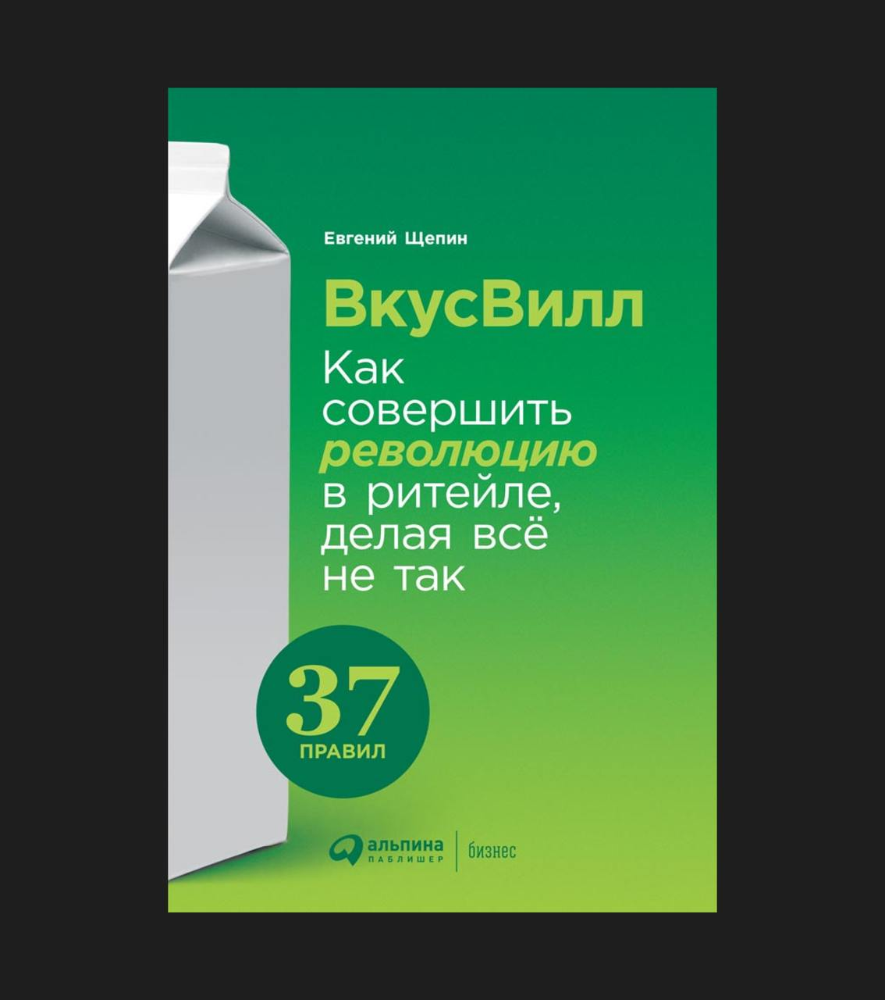

Кейс ВкусВилл — один из самых убедительных подтверждений того, что принципы самоорганизации работают лучше.
ВкусВилл показал, как можно выстроить сильную систему на основе доверия, а не контроля. Где сотрудники сами принимают решения, упрощают процессы, делают шаги без согласований. Где инициатива — не исключение, а норма.
Для меня важно, что это российский кейс. В классической, жёсткой, негибкой отрасли — они сделали бизнес живым. А в пандемию вообще стали №1 по онлайн-доставке. Не потому что заранее всё спланировали, а потому что люди внутри были готовы действовать.
После прочтения книги я стал опираться на инициативы команды ещё смелее.
В карточках собрал ключевые идеи.
Кстати, с автором этой книги — Евгением Щепиным мы записали очень интересный выпуск подкаста Мышеловка — слушать.
Карточки
Не контроль, а доверие
Большинство компаний построены как машины: чёткие функции, управление сверху, контроль результатов. Но организация может быть живым организмом - с чувствами, ростом, внутренним ритмом. Не управляй - выращивай. Не программируй - наблюдай и настраивай. Это требует не контроля, а зрелости и доверия.
Процессы = бюрократия
Процессы нужны. Но только те, что помогают делать лучше. Во ВкусВилле упрощают всё, что не даёт прямой ценности клиенту или сотруднику. Простота как конкурентное преимущество.
Инициатива - не подвиг, а норма
Если видишь проблему - реши Не надо ждать согласования. Так сотрудник, а не руководство, первым предложил экспресс- доставку, которая потом стала одной из главных точек роста.
Люди = ресурс
ВкусВилл смотрит на людей как на самостоятельных, взрослых партнёров Не «рабочие руки», а активные участники системы. Это требует других решений в обучении, адаптации, даже дизайне офисов.
Быстрее - значит умнее
В зрелых командах доверие - не случайность, а система Оно строится на ясности, открытости, ответственности. Контроль - дороже. Он отнимает время, энергию и мотивацию. Создавая пространство, где доверие нормально, ты создаёшь организацию, где растут люди и результаты.
Пандемия стала проверкой
Во время ковида команда сама собрала систему доставки за пару недель - без отдельного отдела, без бюджета. Это и есть результат культуры самоорганизации.